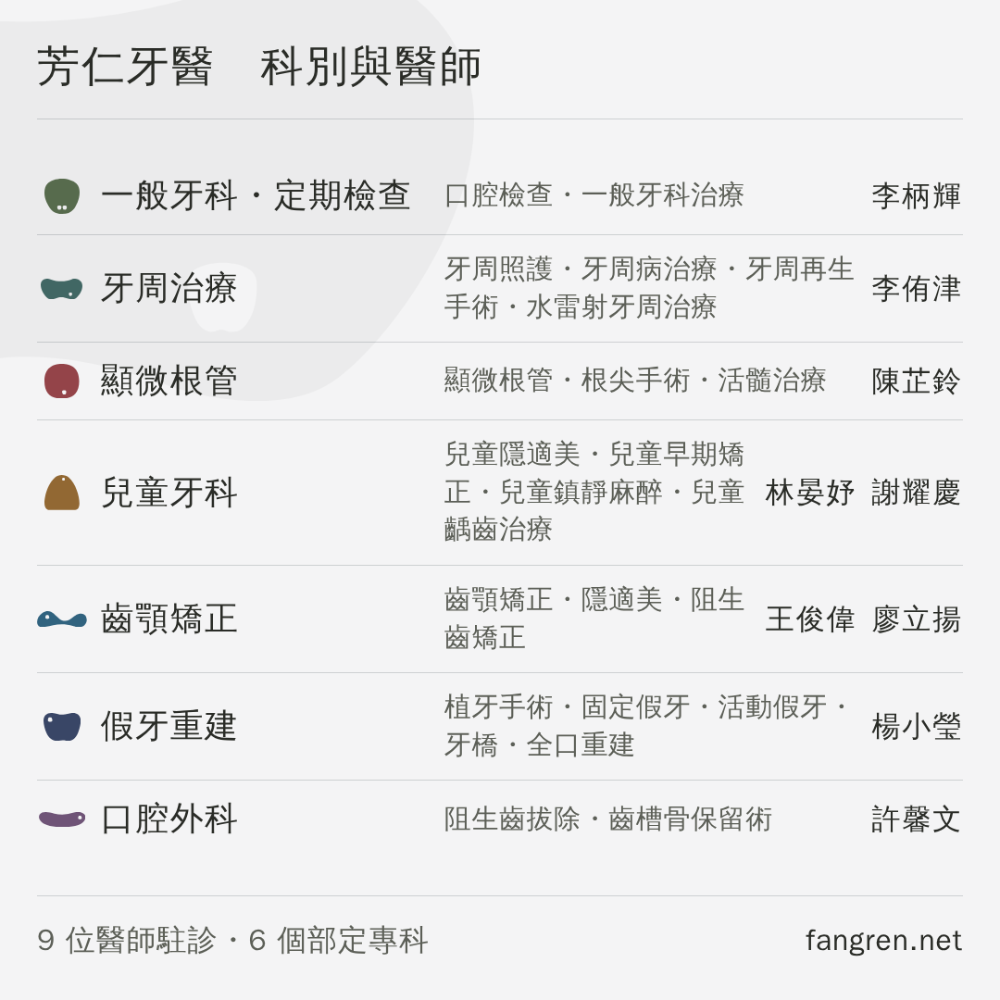
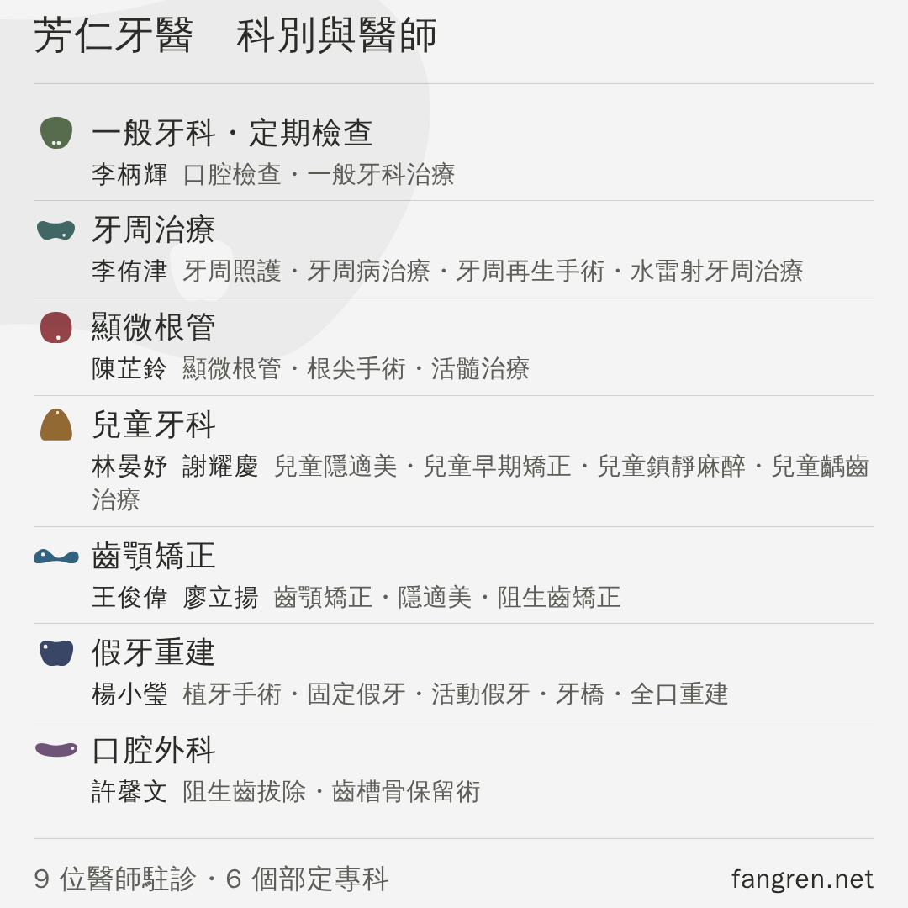

LINE 商家貼文的第三格Ⓒ ＋ Ⓓ 合併，四個排法挑一個
主頁「最新貼文」那三格的小格右。
你說喜歡 Ⓒ ＋ Ⓓ，所以四案的內容完全一樣：一科一列，
該科的專長（Ⓒ 的內容）與該科醫師（Ⓓ 的骨架）都在。
⚠ 四案連標題都一樣，差別只有排法。上一輪的 Ⓐ Ⓑ 已經拿掉。
⚠⚠ 判準是這一張四案在小格的實際大小（410px）並排

左上 Ⓔ 兩行 右上 Ⓕ 兩行・專長做成小塊
左下 Ⓖ 三欄一列 右下 Ⓗ 醫師和專長同一行
下面每一個數字都是量這個尺寸得來的。
四案差在哪
| 幾行 | 醫師在 | 專長被折行 | 最小的字 | |
|---|---|---|---|---|
| Ⓔ 兩行 | 2 | 第一行右 | 0 / 7 科 | 11.0px |
| Ⓕ 專長做成小塊 | 2 | 第一行右 | 0 / 7 科 | 11.0px |
| Ⓖ 三欄一列 | 1 | 最右欄 | 4 / 7 科 | 11.0px |
| Ⓗ 醫師和專長同行 | 2 | 第二行首 | 1 / 7 科 | 11.0px |
「最小的字」是專長那一行，四案都一樣（10px 是這一線的地板，
小於它在小格上等於沒寫）。
折行是 Ⓖ 唯一真正的代價：一列只有一行，專長被擠進中間那一欄，
最長的牙周與兒牙折到 3 行，那一列的醫師名就浮在中間、對不上任何一條線。
Ⓔ 兩行建議這一格post-docs-two.png

第一行 科別＋醫師，第二行 專長，縮排對齊科別名的起點。 七列一行都沒折，是四案裡最好掃的。
Ⓕ 專長做成小塊Ⓒ 那一套的縮小版

和 Ⓔ 完全一樣，只有專長換成描邊小塊，顏色跟著該科走。 每一項各自成塊，掃起來比一整串點分隔清楚；代價是整張圖多了 28 條框線， 而且列距被小塊的高度逼得比 Ⓔ 緊 5px。
Ⓖ 三欄一列最矮的一案

科別 ｜ 專長 ｜ 醫師，一科只佔一列，整塊最矮（756px）。 但七科裡有四科的專長被折成兩三行，那幾列的醫師名就落在中間， 上下看起來參差。
Ⓗ 醫師和專長同一行人和他做的事排在一起

第一行只有科別，第二行醫師在行首（墨）、專長接在後面（柔墨）。 讀起來是「這一科：誰、做什麼」。代價是兒童牙科那一列兩位醫師加四項專長折成兩行。
在主頁上長怎樣大格＝看診時間 小格左＝停車 小格右＝Ⓔ

另外三案的三格模擬在
profile-3up-twoc.png、profile-3up-col3.png、
profile-3up-docfirst.png。
父案：Ⓒ 與 Ⓓ合併之前的那兩張，放著給你比

Ⓒ 做得了什麼 二十三項專長，沒有醫師也沒有科別名。

Ⓓ 一科一行 ＋ 該科醫師 沒有專長。 合併之後這兩張的內容都在同一張上了。
「詳情」那一欄要貼的字圖上的網址點不下去，這裡的可以
⚠⚠ 七條科別網址由這一欄接——圖上放不下七個入口， 但「詳情」放得下，而且點得下去。照這一份貼，不要重打。
還沒問到、也還沒決定的
・專長是全部印（最多的一科五項），不是挑過的；順序照站上。
・「假牙重建」這個縮寫沿用門診表那張（站上仍然是「植牙・假牙重建」）。
・浮水印照小格左那一張（同一顆、4%、壓左上），沒有另外問過。
・主頁那一格是裁切還是留白，後台按一次「預覽」就知道。
產生器 node drafts/channels/post-docs.mjs
守門 node drafts/channels/check-post-docs.mjs
推導在 drafts/channels/README.md 第三十六節。